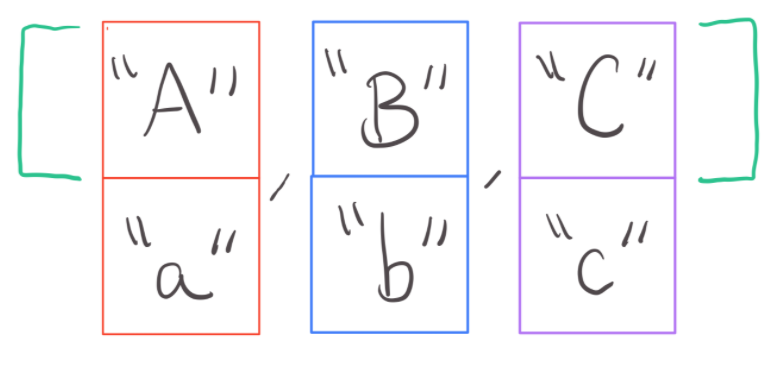

7.11. Two-Dimensional Arrays¶
How are you feeling about arrays? Good, I hope…because things are going to get a little more complicated this week…

As you know, an array is just a fancy word for “list of information”. We have seen that you can put all kinds of information into arrays, like so:
int[] integers = {0, 2, 4, 6, 8, 10};
double[] decimals = {0.0, -0.2, -0.4, -0.6, -0.8, -1.0};
boolean[] true_false = {true, false, true, false};
String[] letters = {"A", "a", "B", "b"};
Integer[] integerObjects = {new Integer(1), new Integer(3), new Integer(-1)};
Double[] decimalObjects = {new Double(3.7), new Double(-4.5)};
The type of information that you can put into an array is practically limitless. As long as you are consistent about the type and you don’t try to change the size of an array after it has been initialized, then you’ll be ok.
In fact, you can even put other arrays into an array!

When you put arrays into an array, the resulting data structure is called a two-dimensional array or 2D-array for short. Here is an example of a 2D-array:
String[] a = {"A", "a"};
String[] b = {"B", "b"};
String[] c = {"C", "c"};
String[][] alphabet = {a, b, c};
If you were to draw this 2D-array out on a piece of paper, it would look something like this:
{kind=link}
Can you see why they are named 2D-arrays? It’s because they go both left and right, and up and down!
Notice how I declared the 2D-array above. I needed to specify the type of value found in the 2D-arrays AND include two pairs of square brackets. Ultimately, you will want to follow this pattern when declaring 2D-arrays:
Type[][] name;
When you’re ready to initialize a 2D-array, you can do something like you see above or you can write the arrays out in a single statement, like so:
Type[][] name = {
{value1a, value2a},
{value1b, value2b},
{value1c, value2c}
};
What if you don’t know what values you would like to put in it right away? No problem! You can declare and initialize a 2D array like so:
Type[][] name = Type[numberOfRows][numberOfColumns];
I know that this may look like it will be empty, but Java will actually chuck a few default values into the 2d array if you don’t specify what values should be placed into it first. Here is a list of the default values that Java will choose for you in cases like these:
1. int becomes 0
2. double becomes 0.0
3. boolean becomes false
4. String/Integer/Double becomes null
5. Objects you define become null
For example, if I were to declare a boolean 2d-array like so, Java will put 4 false values into the array:
boolean[][] check = new boolean[2][2];
Before you move on, try declaring and initializing 2D-arrays of a few different types. Once you’re done with that, try making a 2D-array that contains multiple types. What happens?